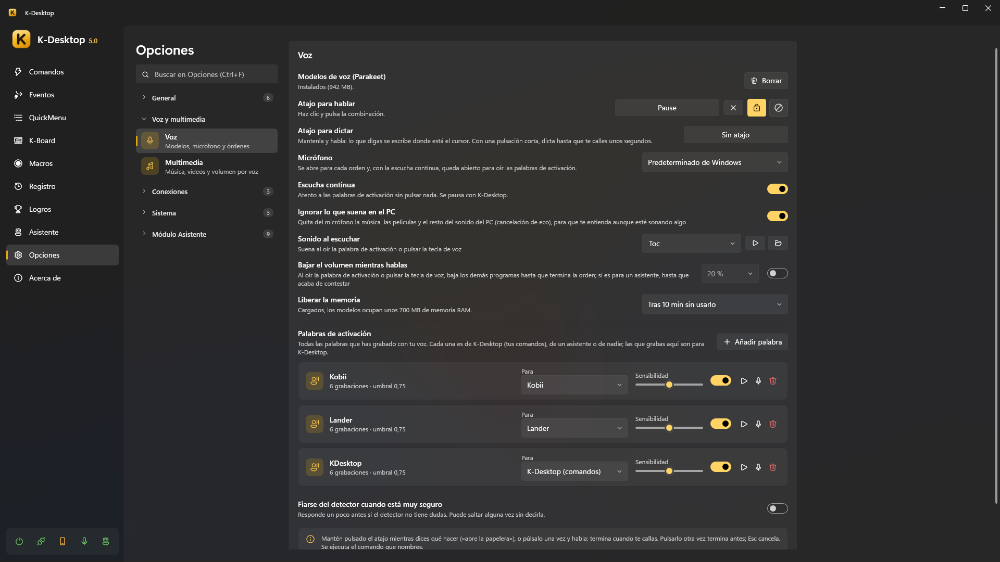

Voz
K-Desktop entiende órdenes habladas en tu PC: ni el audio ni el texto salen de él, y no hace falta internet.

Prepararla
- Opciones → Voz → Modelos de voz → Descargar. Se descargan una vez: Parakeet (de voz a texto, muchos idiomas), Silero (detecta cuándo hablas), el detector de la palabra de activación y EmbeddingGemma (encuentra el comando por su significado). Cargados, ocupan unos 700 MB de RAM; se pueden liberar tras unos minutos sin usarlos (Parakeet no, mientras haya una palabra de activación escuchando: así la comprueba al momento).
- Elige el micrófono (o el predeterminado de Windows).
- Graba una palabra de activación (Opciones → Palabras de activación → Añadir palabra) o pon un atajo para hablar.
Hablarle
- Atajo: mantenlo pulsado mientras dices qué hacer («abre la papelera»), o púlsalo una vez y habla: acaba cuando dejas de hablar. Pulsarlo otra vez acaba antes; Esc cancela.
- Palabra de activación: con Escucha continua, di la palabra y la orden seguidas («K-Desktop, abre el navegador»), o solo la palabra y espera a «Escuchando…».

Se ejecuta el comando que nombras. Se encuentra por su nombre (también cuando el reconocimiento se equivoca un poco) o por su significado («pon algo de música» encuentra tu comando «Spotify»). A un comando le puedes enseñar más frases.
Palabras de activación
En Opciones → Palabras de activación grabas tu propia palabra con tu voz, en unos segundos, con un pequeño asistente: un poco de silencio, la palabra varias veces y un poco de habla normal para que aprenda lo que no es la palabra.

- Cada palabra es de K-Desktop (tus comandos), de un asistente, o de nadie (no se escucha).
- Sensibilidad: más a la derecha la pilla con más facilidad, pero también puede saltar sin que la digas. Probar te dice qué tal va.
- Responder más rápido: si el detector no tiene dudas, contesta sin comprobarlo con Parakeet.
- No sale nada (ni «Escuchando…», ni el sonido, ni baja la música) hasta que comprueba que de verdad era la palabra.
- Dicha a mitad de frase («le estaba enseñando a mi hermano el Lander») entiende que hablas de él, no con él, y no hace nada.
Mientras hablas
- Ignorar lo que suena en el PC: la cancelación de eco quita del micrófono la música y las películas, para que te entienda aunque suene algo.
- Bajar el volumen mientras hablas: los demás programas bajan hasta que acaba la orden (con un asistente, hasta que termina de contestar).
- Sonido al escuchar.
Música, vídeos y volumen
Opciones → Multimedia: órdenes como «reproduce», «pausa», «siguiente», «sube el volumen», «volumen al 30» funcionan sin crear ningún comando, en cualquiera de los idiomas instalados. Usan las teclas multimedia, así que valen con cualquier reproductor que las atienda: la música, el navegador, una película («pausa la película»).
Dictado
La acción Dictar (y su propio atajo en Opciones → Voz) escribe lo que dices donde está el cursor, sin IA. Di «nueva línea», «punto y aparte», «borra eso» o «deja de dictar»; también acaba tras unos segundos de silencio o con Esc.
Con Iniciar el dictado con la voz encendido (Opciones → Voz, debajo del atajo para dictar), también se empieza como una orden de voz: «vamos a dictar», «empieza a dictar», «escribe lo que te diga».